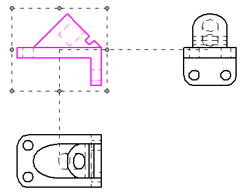
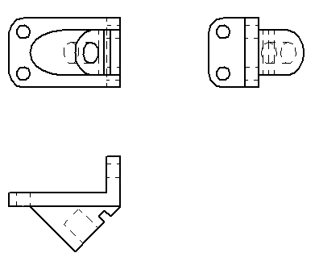

Drawing View Selection command bar
Sets modification options for the selected drawing view. Not all options are available for all drawing views.
- Drawing View Style
-
Displays the name of the currently used drawing view style, or applies a different drawing view style.
- Caption
-
Specifies the primary caption of the drawing view. Default text or property text that is displayed in this box is based on the text defined in the drawing view style for the selected drawing view type (for example, principal, section, detail). Caption text may consist of plain text, property text, and symbols.
You can add and edit multiple lines of primary caption text by typing in the box. You also can modify the content using the Caption tab (Drawing View Properties dialog box).
- Show Caption
-
The top portion of the Select Caption list selects the caption types (primary, secondary) to be displayed for the currently selected drawing view or view annotation.
The bottom portion of the Select Caption list specifies whether to display the values for property text codes (%AS, %VS, %VR, and %LN).
- Show Primary Caption
-
Specifies that the content defined for the Primary caption is displayed.
You can modify the caption content for the selected drawing view using the Caption tab (Drawing View Properties dialog box).
- Show Secondary Caption
-
Specifies that the content defined for the Secondary caption is displayed. The secondary caption text always appears below the primary caption text.
You can create and modify the secondary caption content for the selected drawing view using the Caption tab (Drawing View Properties dialog box).
Note:Even when the Show Primary Caption or Show Secondary Caption option is checked, when any of the following property text codes are part of the caption, you must also select the matching property from the Show Caption list to show its value in the caption.
- Show Suffix
-
When a section view, detail view, or auxiliary view is selected, and when %AS is defined in the caption, displays the caption suffix.
- Show Annotation Sheet Number
-
When a section view, detail view, or auxiliary view is selected, and when %LN is defined in the caption, displays the sheet number where the view annotation—the cutting plane, viewing plane, or detail envelope—is located.
- Show View Scale
-
Displays the view scale in the caption when %VS is defined in the caption text.
- Show Angle of Rotation
-
Displays the view rotation angle in the caption when %VR is added to the caption text.
Note:Primary captions, secondary captions, and view annotation captions can be defined globally in the Drawing View style. To learn how, see these help topics.
You also can add a primary caption to a selected drawing view using the Caption box on the command bar.
 Drawing View Layout
Drawing View Layout-
Opens the Drawing View Layout dialog box for you to change the view orientation of a selected drawing view. Drawing views on the sheet that are folded 90 degrees from, and aligned with, the selected drawing view also change their orientation. You also can change the orientation of a pictorial view, but no other views change along with it.
If you change the orientation of a drawing view where there is a cutting plane, a detail envelope, or an auxiliary view plane, only the view derived from it also changes.
This option is not available for derived views, PMI model views, views with applied configurations, and 2D views.
Example:When the orientation of the selected (highlighted) drawing view was changed, the drawing views that are aligned with it also changed.
Modify drawing view layout
Before

After

- View Orientation

-
Changes the drawing view orientation. You can select a Solid Edge default view or a user-defined named view. The default view options include Front View, Top View, Right View, Iso View, and Trimetric View. Drawing views on the sheet that are folded 90 degrees from, and aligned with, the selected drawing view also change their orientation.
This option is not available for derived views, PMI model views, views with applied configurations, and 2D views.
- Scale
-
Selects a predefined ratio as the drawing scale.
The specified ratio defines the size of the drawing in relation to the size of the real-world object. For a 2:1 ratio, the 2 represents the size of the drawing and the 1 represents the size of the real-world object.
- Scale value
-
Defines the drawing view scale based on a value you type. You can enter a decimal value, a ratio, or a whole number.
If you enter a ratio or whole number, it converts to the equivalent decimal value in the Scale value box. However, the ratio is displayed in the Scale list, and it can be referenced in the drawing view caption or elsewhere on the drawing.
Example:-
If you enter 5, then the Scale value is displayed as 5.000, and the sheet Scale list is set to 5:1.
-
If you enter 1/3, then the Scale value is displayed as 0.333 and the sheet Scale list is set to 1/3.
-
If you enter a custom ratio, such as 3:2 or 3/2, the Scale value is displayed as 1.500, and the new ratio of 3:2 is added to the Scale list for the document.
-
- Section Only

-
Changes the selected simple section view type to a thin-section (also called paper-thin) section view, or it changes a thin-section view to a simple section view.
A thin-section view shows only the thin slice of geometry that intersects the cutting plane. To further illustrate the difference, you see half of the part with a typical section view (A), but only a thin slice of the part with a Section Only section view (B).

This option is useful when creating sections of complex parts and assemblies where displaying the geometry behind the cutting plane would be confusing or unnecessary. Section views placed with the Section Only option also process faster than standard section views.
- Revolved Section View

-
Changes the selected simple section view type to a revolved section view, or it changes a revolved section view to a simple section view.
On certain types of parts you can use a revolved section view to more accurately view the features on the part. Revolved section views are created from a cutting plane consisting of two or more lines.

- Properties
-
Displays the Drawing View Properties dialog box.
- Modify Drawing View Boundary
-
While you can modify the size of a rectangular drawing view cropping boundary simply by dragging its handles, the Modify Drawing View Boundary option allows you to define a custom, non-rectangular drawing view cropping boundary. This option is not available for dependent and independent detail views.
When you select this option, the drawing view is displayed in a special cropping window. The rectangular boundary is converted to four endpoint connected line segments. You can use the 2D drawing tools to redraw the view cropping border. However, the new cropping boundary profile must be closed.
-
To use a portion of the rectangular boundary window in the custom profile, draw new line segments that connect to the existing line segments. When you're done drawing the boundary, use the Trim command to remove the unneeded line segments.
-
To draw a new boundary profile from scratch, delete all the existing line segments and then draw the new boundary using the 2D drawing tools.
Use the Close Cropping Boundary button on the ribbon to exit the cropping window, update the view, and return to the drawing.
Click here to see illustrations showing how the Modify Drawing View Boundary option can be used to create a custom cropped drawing view.
You can return a cropped drawing view to its original display using the Uncrop command on the selected drawing view's shortcut menu.
-
- Shading Options
-
Specifies color, grayscale, shading, and edge visibility for the drawing view.
- Not Shaded
-
Displays color with visible and hidden edges, but no shading.
- Shaded
-
Displays color and shading, but no edges.
- Shaded with Edges
-
Displays color and shading with visible edges.
- Grayscale Shaded
-
Displays grayscale and shading, but no edges.
- Grayscale Shaded with Edges
-
Displays grayscale with visible edges.
- Use Model Colors
-
Applies model colors to drawing view edges and hatching. A drawing view that uses model color goes out of date when the color is changed in the model.
 Show Broken View
Show Broken View-
Shows or hides the broken view regions of the drawing view.
 Lock drawing view position
Lock drawing view position-
Prevents the selected drawing views from being moved accidentally. When this box is checked, and the drawing view is highlighted, a lock symbol is displayed within the drawing view boundary to indicate its position is fixed.
A locked drawing view still can be moved using explicit commands. To learn more, see Drawing view manipulation.

How do I
Create drawing views of a part with the View WizardChange drawing view orientation
Look up more details
Creating drawing views from a model dragged onto a sheetView Wizard command
View Wizard command bar
Quick links
Drawing production workflowsSheet scale and drawing view scale
Add custom drawing view scales to Solid Edge
Modifying captions
Drawing view properties
Drawing View Properties dialog box
Drawing view manipulation
Drawing View Wizard tab (Solid Edge Options dialog box)